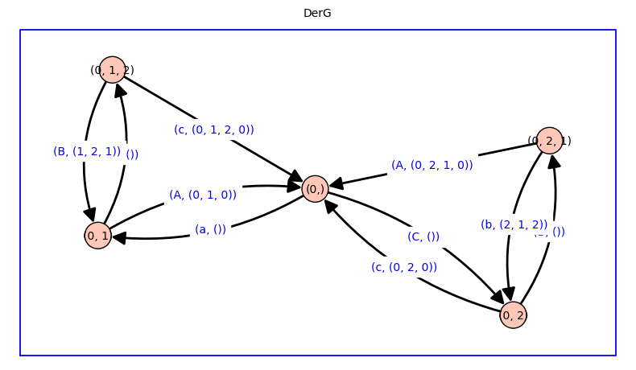
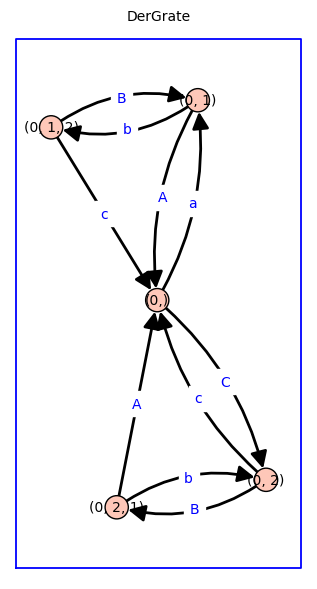
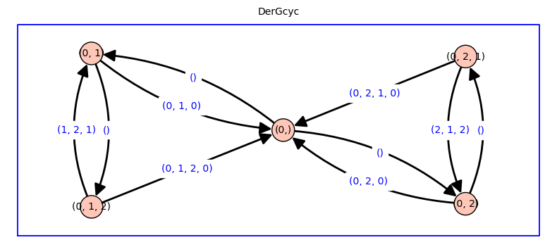
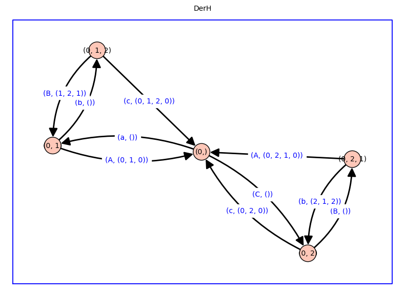

Double Derived Markov chain w/ contexts#
def extract_first_cycle(sequence,cycle_shift=True):
seen = {}
start = None
end = None
for i, item in enumerate(sequence):
if item in seen:
if start is None:
start = seen[item]
end = i
else:
break
else:
seen[item] = i
if start is not None and end is not None:
if cycle_shift:
return cyclic_shift(sequence[start:end+1]), sequence[0:start]+sequence[end:]
else:
return sequence[start:end+1], sequence[0:start]+sequence[end:]
else:
return None, sequence[end:]
def derived_graph(G,r=None,edge_labels='both'):
if r==None:
r=G.vertices(sort=True)[0]
def doit(DerG):
sink_list = DerG.sinks()
if len(sink_list)==0:
return DerG
else:
for w in sink_list:
for u in G.neighbor_out_iterator(w[-1]):
cyc, seq = extract_first_cycle(w+(u,),cycle_shift=False)
if cyc==None:
cyc=()
if edge_labels=='cyc':
DerG.add_edge(w,seq,cyc)
elif edge_labels=='rate':
DerG.add_edge(w,seq,G.edge_label(w[-1],seq[-1]))
elif edge_labels=='both':
DerG.add_edge(w,seq,(G.edge_label(w[-1],seq[-1]),cyc))
return doit(DerG)
DerG = DiGraph()
DerG.add_vertex((r,))
return doit(DerG)
def cartesian_edge_color(GH,verbose=True):
# Define edge colors
R = rainbow(2)
edge_colors = {}
for i in range(2):
edge_colors[R[i]] = []
# Apply edge colors
for edge in GH.edges():
u, v, label = edge
if u[0] == v[0]:
edge_colors[R[0]].append(edge)
if u[1] == v[1]:
edge_colors[R[1]].append(edge)
# Plot the Cartesian product with edge colors
if verbose:
GH.show(edge_colors=edge_colors)
#GH.graphplot(vertex_labels=False, vertex_size=0,edge_colors=edge_colors).show()
return edge_colors
def double_derived_graph_with_context(DerG,DerH,verbose=False):
Vg = edge_ring_from_derived_graph(DerG)
Vh = edge_ring_from_derived_graph(DerH)
groot = DerG.vertices(sort=True)[0][0] # first element of tuple vertex = (0,) ==> groot = 0
hroot = DerH.vertices(sort=True)[0][0]
gh_vars = [];
for g_var in Vg.gens():
gh_vars += [str(g_var)+'%s'%(i+hroot) for i in range(H.order()) ]
for h_var in Vh.gens():
gh_vars += [str(h_var)+'%s'%(i+groot) for i in range(G.order()) ]
gh_vars = list(set(gh_vars))
Vgh = PolynomialRing(ZZ, names=gh_vars)
DDerGH = DerG.cartesian_product(DerH)
for edge in DDerGH.edges():
DDerGH.set_edge_label(edge[0],edge[1],None)
if edge[0][0]==edge[1][0]:
hfr = edge[0][1]
hto = edge[1][1]
if verbose:
print('h changed:',edge,':',hfr,'->',hto)
gh_var = Vgh( str(DerH.edge_label(hfr,hto)[0] ) + str( hfr[-1] ))
new_label = (gh_var,DerH.edge_label(hfr,hto)[1])
DDerGH.set_edge_label(edge[0],edge[1],new_label)
if edge[0][1]==edge[1][1]:
gfr = edge[0][0]
gto = edge[1][0]
if verbose:
print('g changed:',edge,':',gfr,'->',gto)
gh_var = Vgh( str(DerH.edge_label(gfr,gto)[0] ) + str( gfr[-1] ))
new_label = ( gh_var, DerG.edge_label(gfr,gto)[1])
DDerGH.set_edge_label(edge[0],edge[1],new_label)
return DDerGH
def double_derived_graph_without_context(DerG,DerH,verbose=False):
DDerGH = DerG.cartesian_product(DerH)
Vg = edge_ring_from_derived_graph(DerG)
Vh = edge_ring_from_derived_graph(DerH)
Vgh = merge_edge_rings(Vg,Vh)
for edge in DDerGH.edges():
DDerGH.set_edge_label(edge[0],edge[1],None)
if edge[0][0]==edge[1][0]:
hfr = edge[0][1]
hto = edge[1][1]
if verbose:
print('h changed:',edge,':',hfr,'->',hto)
new_label = (Vgh(DerH.edge_label(hfr,hto)[0]),DerH.edge_label(hfr,hto)[1])
DDerGH.set_edge_label(edge[0],edge[1],new_label)
if edge[0][1]==edge[1][1]:
gfr = edge[0][0]
gto = edge[1][0]
if verbose:
print('g changed:',edge,':',gfr,'->',gto)
new_label = ( Vgh(DerG.edge_label(gfr,gto)[0]), DerG.edge_label(gfr,gto)[1])
DDerGH.set_edge_label(edge[0],edge[1],new_label)
return DDerGH
def double_derived_graph(DerG,DerH,context=False,reduce=False,verbose=False):
if context:
DDerGH = double_derived_graph_with_context(DerG,DerH,verbose=verbose)
else:
DDerGH = double_derived_graph_without_context(DerG,DerH,verbose=verbose)
if reduce:
if DerG == DerH:
DDerGH = symmetrize(DDerGH,rates=True)
else:
print('Warning: Cannot reduce when DerG not equal to DerH')
return DDerGH
def merge_edge_rings(Vg,Vh):
gh_vars = [ str(g_var) for g_var in Vg.gens() ] + [ str(h_var) for h_var in Vh.gens() ]
gh_vars = list(set(gh_vars))
return PolynomialRing(ZZ, names=gh_vars)
def Cartesian_product_without_context(G, H):
GH = G.cartesian_product(H)
Vg = edge_ring_from_graph(G)
Vh = edge_ring_from_graph(H)
Vgh = merge_edge_rings(Vg,Vh)
for v in GH.vertices(sort=True):
for u in GH.vertices(sort=True):
if v!=u:
if v[0]==u[0] and H.has_edge(v[1],u[1]):
GH.set_edge_label(v,u,Vgh(H.edge_label(v[1],u[1])))
if v[0]==u[0] and H.has_edge(u[1],v[1]):
GH.set_edge_label(u,v,Vgh(H.edge_label(u[1],v[1])))
if v[1]==u[1] and G.has_edge(v[0],u[0]):
GH.set_edge_label(v,u,Vgh(G.edge_label(v[0],u[0])))
if v[1]==u[1] and G.has_edge(u[0],v[0]):
GH.set_edge_label(u,v,Vgh(G.edge_label(u[0],v[0])))
return GH
def Cartesian_product_with_context(G, H):
Vg = edge_ring_from_graph(G)
Vh = edge_ring_from_graph(H)
groot = G.vertices(sort=True)[0]
hroot = H.vertices(sort=True)[0]
gh_vars = [];
for g_var in Vg.gens():
gh_vars += [str(g_var)+'%s'%(i+hroot) for i in range(H.order()) ]
for h_var in Vh.gens():
gh_vars += [str(h_var)+'%s'%(i+groot) for i in range(G.order()) ]
gh_vars = list(set(gh_vars))
Vgh = PolynomialRing(ZZ, names=gh_vars)
GH = G.cartesian_product(H)
for v in GH.vertices(sort=True):
for u in GH.vertices(sort=True):
if v!=u:
if v[0]==u[0] and H.has_edge(v[1],u[1]):
gh_var = Vgh(str(H.edge_label(v[1],u[1])) + str(v[0]))
GH.set_edge_label(v,u,gh_var)
if v[0]==u[0] and H.has_edge(u[1],v[1]):
gh_var = Vgh(str(H.edge_label(u[1],v[1])) + str(v[0]))
GH.set_edge_label(u,v,gh_var)
if v[1]==u[1] and G.has_edge(v[0],u[0]):
gh_var = Vgh(str(G.edge_label(v[0],u[0])) + str(v[1]))
GH.set_edge_label(v,u,gh_var)
if v[1]==u[1] and G.has_edge(u[0],v[0]):
gh_var = Vgh(str(G.edge_label(u[0],v[0])) + str(v[1]))
GH.set_edge_label(u,v,gh_var)
return GH
def Cartesian_product(G, H, context=False):
if context:
GH = Cartesian_product_with_context(G, H)
else:
GH = Cartesian_product_without_context(G, H)
return GH
def edge_ring_from_graph(G):
Vg = G.random_edge()[2].parent()
return Vg
def edge_ring_from_derived_graph(DerG):
Vg = DerG.random_edge()[2][0].parent()
return Vg
def weighted_laplacian_matrix(G):
verts = G.vertices(sort=True)
A = G.weighted_adjacency_matrix(verts)
Q = A - diagonal_matrix(sum(A.T))
return Q
def my_trees(Q,vdel=None,vdict=None,verbose=False,big=False): # Note: vdel needs to be a list, such as [0] or [0,3,4], or None
if vdel!=None:
if isinstance(vdel, tuple):
vdel = list(vdel)
if isinstance(vdel, list) == False:
raise ValueError("vdel must be a list of vertices or integers")
if vdict==None:
vd = vdel
else:
vd = [ vdict[key] for key in vdel ]
if big==False:
Q0 = Q.delete_rows(vd).delete_columns(vd)
t = det(Q0)*(-1)^Q0.nrows()
else:
G = DiGraph(Q)
G.merge_vertices(vd)
r = vd[0]
# Note: The next line is r=vd[0] because merge_vertices results
# in the new vertex is named after the first vertex in the merge list
# https://doc.sagemath.org/html/en/reference/graphs
# /sage/graphs/generic_graph.html#sage.graphs.generic_graph.GenericGraph.merge_vertices
G.remove_loops()
VV = Q[0,0].parent() # the ring of edge labels
t = VV(0)
for k,in_branching in enumerate(G.in_branchings(r)):
edge_str = ''
edge_prod = VV(1)
for e in in_branching.edges():
edge_str += str(e[2])
edge_prod *= e[2]
t += edge_prod
if verbose:
in_branching.show(figsize=4,graph_border=True,\
edge_labels=True,title=str(k)+': '+edge_str)
if verbose:
print('For root/cycle',vdel,':',t.factor(),'\n')
return t
else:
T = []
if vdict==None:
for i in range(Q.ncols()):
t = my_trees(Q,vdel=[i],verbose=verbose,big=big)
T.append(t)
else:
for key in vdict.keys():
t = my_trees(Q,vdel=[key],vdict=vdict,verbose=verbose,big=big)
T.append(t)
return T
def cycle_flux_analysis(G,verbose=True,str=''):
if verbose:
print()
G.show(title=str,edge_labels=True,graph_border=True,figsize=5)
nvG = G.order(); neG = G.size(); betaG = neG-nvG+1;
vG = [ v for v in G.vertices(sort=True) ]
dict_vG = dict(zip(vG,range(nvG)));
inverted_dict_vG = {value: key for key, value in dict_vG.items()}
Q_G = weighted_laplacian_matrix(G)
if verbose:
print()
print(Q_G)
print()
Tg = my_trees(Q_G,verbose=verbose)
TG = sum(Tg)
cycleG_p, cycleG_m, cycleG_2 = simple_cycles(G,minsize=2)
cycleG = cycleG_p + cycleG_m + cycleG_2
if verbose:
print(str,'cycles p:',cycleG_p,'\n')
print(str,'cycles m:',cycleG_m,'\n')
print(str,'cycles 2:',cycleG_2,'\n')
print()
d_cycleG = { k:v for k,v in enumerate(cycleG) }
inverted_d_cycleG = {value: key for key, value in d_cycleG.items()}
Jg = []
for i,cyc in enumerate(cycleG):
Pi = make_pi_one_way(G,cyc)
Jg.append(Pi*my_trees(Q_G,cyc,vdict=dict_vG,verbose=False))
if verbose:
print(str,'cycle flux',i,':',Jg[i].factor())
print()
return nvG, neG, betaG, Tg, TG, cycleG_p, cycleG_m, cycleG_2, cycleG, Jg, dict_vG, inverted_dict_vG, d_cycleG, inverted_d_cycleG
def simple_cycles(D,minsize=2,maxsize=1000):
# Note: this uses cyclic_shift() function
cycles_p0=[]
for c in D.all_simple_cycles():
if len(c)>max(minsize,3) and len(c)<=maxsize and list(reversed(c)) not in cycles_p0:
cycles_p0.append(c)
cycles_p=[]
for c in cycles_p0:
cycles_p.append(cyclic_shift(c))
#
cycles_m=[]
for c in cycles_p:
cycles_m.append(list(reversed(c)))
# next line: this makes cp<cm for each pair
# (cycle called positive is lexicographically smaller)
for i in range(len(cycles_p)):
cp = cycles_p[i]
cm = cycles_m[i]
if cp>cm: # want cp<cm
cycles_p[i]=cm
cycles_m[i]=cp
cycles_p = [ tuple(c) for c in cycles_p]
cycles_m = [ tuple(c) for c in cycles_m]
# two-cycles
if minsize==2:
cycles_2_0=[]
for c in D.all_simple_cycles():
if len(c)==3 and list(reversed(c)) not in cycles_p0:
cycles_2_0.append(c)
cycles_2=[]
for c in cycles_2_0:
cycles_2.append(cyclic_shift(c))
cycles_2 = [ tuple(c) for c in cycles_2]
return cycles_p, cycles_m, cycles_2
else:
return cycles_p, cycles_m
def cyclic_shift(c,shift='default'): # 'default' shifts so that first element is minimal, presumes a simple cycle
if c[-1]==c[0]:
if shift=='default':
c = c+c[1:]
i = c.index(min(c))
j = c.index(min(c),i+1) # i+1 is the starting index from which to search for min(c)
return c[i:j+1]
else:
n=len(c)
c = c+c[1:]
return c[shift:shift+n]
else:
raise ValueError(str(c)+" is not a cycle.")
def make_pi_one_way(D,cyc):
p = 1;
for i in range(len(cyc)-1):
p=p*D.edge_label(cyc[i],cyc[i+1])
return p
def split_derived_graph(DerG):
DerGrate = copy(DerG)
DerGcyc = copy(DerG)
for e in DerGrate.edges(sort=True):
DerGrate.set_edge_label(e[0],e[1], DerG.edge_label(e[0],e[1])[0])
for e in DerGcyc.edges(sort=True):
DerGcyc.set_edge_label(e[0],e[1],DerG.edge_label(e[0],e[1])[1])
return DerGrate, DerGcyc
def cycle_fluxes_from_derived_graph(DerG,verbose=False,big=False,factor=True):
DerGrate, DerGcyc = split_derived_graph(DerG)
vDerG = [ v for v in DerGcyc.vertices(sort=True) ]
dict_vDerG = dict(zip(vDerG,range(len(vDerG))))
Q_DerG = weighted_laplacian_matrix(DerGrate)
T = my_trees(Q_DerG,vdel=None,vdict=None,verbose=False,big=big)
if verbose:
print('rooted spanning tree of derived graph T(0,0) =',sum(T).factor(),'\n')
Jg = []
dict_Jg_lumped = {}
for e in DerGcyc.edges(sort=True):
if DerGcyc.edge_label(e[0],e[1]):
X = T[dict_vDerG[e[0]]]*DerGrate.edge_label(e[0],e[1]) # Note: do not factor X (if you do, you can't +=X below)
if factor:
Jg.append(X.factor())
else:
Jg.append(X)
if verbose:
print('J',e[2],'=', Jg[-1],'\n')
cyc = cyclic_shift(DerGcyc.edge_label(e[0],e[1]))
if cyc in dict_Jg_lumped:
dict_Jg_lumped[cyc] += X
else:
dict_Jg_lumped[cyc] = X
if factor:
for key in dict_Jg_lumped:
dict_Jg_lumped[key] = dict_Jg_lumped[key].factor()
return dict_Jg_lumped
def graph_and_edge_ring_from_dict(dG):
Gstr = DiGraph(dG)
g_vars = [ e[2] for e in Gstr.edges(sort=True) ]
Vg=PolynomialRing(ZZ,names=g_vars,order='invlex')
G = copy(Gstr)
for estr in Gstr.edges(sort=True):
G.set_edge_label(estr[0],estr[1],Vg(estr[2]))
return G, Vg
def symmetrize(DerGH,rates=False):
DerGH_merge = copy(DerGH)
if rates:
for v in DerGH_merge.vertices(sort=True):
if v[0]==v[1]:
for w in list(DerGH_merge.neighbor_out_iterator(v)):
DerGH_merge.set_edge_label(v,w,( 2*DerGH_merge.edge_label(v,w)[0],\
DerGH_merge.edge_label(v,w)[1] ))
for v in DerGH_merge.vertices(sort=True):
for u in DerGH_merge.vertices(sort=True):
if v != u:
if v[0] == u[1] and v[1] == u[0]:
DerGH_merge.merge_vertices([v,u])
return DerGH_merge
dG_house = {0: {1: 'a', 2: 'c', 4: 'f'}, 1: {0: 'A', 2: 'b'}, 2: {0: 'C', 1: 'B', 3: 'd'}, 3: {2: 'D', 4: 'e'}, 4: {3: 'E', 0: 'F'}}
dG_c3_handle = {0: {1: 'a', 2: 'c'}, 1: {0: 'A', 2: 'b'}, 2: {0: 'C', 1: 'B', 3: 'd'}, 3: {2: 'D'}}
dG_c4_chord = {0: {1: 'a', 2: 'c', 3: 'e'}, 1: {0: 'A', 2: 'b'}, 2: {0: 'C', 1: 'B', 3: 'd'}, 3: {0: 'E', 2: 'D'}}
dG_c3_tail = {0: {1: 'a', 2: 'C'}, 1: {0: 'A', 2: 'b'}, 2: {0: 'c', 1: 'B', 3: 'd'}, 3: {2: 'd'}}
dG_p2 = {0: {1: 'a'}, 1: {0: 'A'}}
dG_p3 = {0: {1: 'a'}, 1: {0: 'A', 2: 'b'}, 2: {1: 'B'}}
dG_p4 = {0: {1: 'a'}, 1: {0: 'A', 2: 'b'}, 2: {1: 'B', 3: 'c'}, 3: {2: 'C'}}
dG_c3 = {0: {1:'a', 2:'C'}, 1: {0:'A', 2:'b'}, 2: {0:'c', 1:'B'}}
dG = dG_c3 # choose graph here (dG may be used below)
G, Vg = graph_and_edge_ring_from_dict(dG)
#Vg.inject_variables()
nvG, neG, betaG, Tg, TG, cycleG_p, cycleG_m, cycleG_2, cycleG, Jg, dict_vG, inverted_dict_vG, d_cycleG, inverted_d_cycleG = cycle_flux_analysis(G,str='G')
[-C - a a C]
[ A -b - A b]
[ c B -B - c]
For root/cycle [0] : A*B + b*c + A*c
For root/cycle [1] : C*B + a*B + a*c
For root/cycle [2] : C*b + a*b + C*A
G cycles p: [(0, 1, 2, 0)]
G cycles m: [(0, 2, 1, 0)]
G cycles 2: [(0, 1, 0), (0, 2, 0), (1, 2, 1)]
G cycle flux 0 : a * b * c
G cycle flux 1 : C * A * B
G cycle flux 2 : a * A * (B + c)
G cycle flux 3 : C * (b + A) * c
G cycle flux 4 : (C + a) * b * B
dH_c5 = {0: {1: 'v', 2: 'x', 4: 'Z'}, 1: {0: 'V', 2: 'w'}, 2: {1: 'W', 3: 'x'}, 3: {2: 'X', 4: 'y'}, 4: {0: 'z', 3: 'Y'}}
dH_c3 = {0: {1: 'x', 2: 'Z'}, 1: {0: 'X', 2: 'y'}, 2: {0: 'z', 1: 'Y'}}
dH_p4 = {0: {1: 'x'}, 1: {0: 'X', 2: 'y'}, 2: {1: 'Y', 3: 'z'}, 3: {2: 'Z'}}
dH_p3 = {0: {1: 'x'}, 1: {0: 'X', 2: 'y'}, 2: {1: 'Y'}}
dH_p2 = {0: {1: 'x'}, 1: {0: 'X'}}
dH_p2_r2 = {2: {3: 'x'}, 3: {2: 'X'}}
dH_c3_r3 = {3: {4: 'x', 5: 'Z'}, 4: {3: 'X', 5: 'y'}, 5: {3: 'z', 4: 'Y'}}
dH_p3_r3 = {3: {4: 'x'}, 4: {3: 'X', 5: 'y'}, 5: {4: 'Y'}}
dH = copy(dG);
#dH = dH_p2_r2
H, Vh = graph_and_edge_ring_from_dict(dH)
#Vh.inject_variables()
nvH, neH, betaH, Th, TH, cycleH_p, cycleH_m, cycleH_2, cycleH, Jh, dict_vH, inverted_dict_vH, d_cycleH, inverted_d_cycleH = cycle_flux_analysis(H,str='H')
[-C - a a C]
[ A -b - A b]
[ c B -B - c]
For root/cycle [0] : A*B + b*c + A*c
For root/cycle [1] : C*B + a*B + a*c
For root/cycle [2] : C*b + a*b + C*A
H cycles p: [(0, 1, 2, 0)]
H cycles m: [(0, 2, 1, 0)]
H cycles 2: [(0, 1, 0), (0, 2, 0), (1, 2, 1)]
H cycle flux 0 : a * b * c
H cycle flux 1 : C * A * B
H cycle flux 2 : a * A * (B + c)
H cycle flux 3 : C * (b + A) * c
H cycle flux 4 : (C + a) * b * B
for context in [ False, True ]:
GH = Cartesian_product(G, H, context=context)
print(edge_ring_from_graph(GH))
GH.show(edge_labels=True,figsize=12,graph_border=True,\
edge_colors=cartesian_edge_color(GH,verbose=False),\
title='G box H, context = ' + str(context))
GH0 = GH.to_undirected()
GH0.show(edge_labels=False,vertex_labels=False,vertex_size=0,figsize=4,graph_border=True,edge_colors=cartesian_edge_color(GH0,verbose=False),title='G box H')
Multivariate Polynomial Ring in b, B, a, c, C, A over Integer Ring
Multivariate Polynomial Ring in b1, c1, c2, B2, B0, C2, B1, a0, a1, a2, C1, A0, b0, A2, A1, b2, c0, C0 over Integer Ring
DerG = derived_graph(G)
DerG.show(edge_labels=True,figsize=8,graph_border=True,title='DerG')

DerGrate, DerGcyc = split_derived_graph(DerG)
DerGrate.show(edge_labels=True,figsize=8,graph_border=True,title='DerGrate')
DerGcyc.show(edge_labels=True,figsize=8,graph_border=True,title='DerGcyc')


dict_Jg = cycle_fluxes_from_derived_graph(DerG,verbose=True)
rooted spanning tree of derived graph T(0,0) = (A*B + b*c + A*c) * (A*B + C*B + a*B + b*c + A*c + a*c + C*b + a*b + C*A)
J (0, 1, 0) = a * A * (B + c) * (A*B + b*c + A*c)
J (0, 1, 2, 0) = a * b * c * (A*B + b*c + A*c)
J (1, 2, 1) = a * b * B * (A*B + b*c + A*c)
J (0, 2, 0) = C * (b + A) * c * (A*B + b*c + A*c)
J (0, 2, 1, 0) = C * A * B * (A*B + b*c + A*c)
J (2, 1, 2) = C * b * B * (A*B + b*c + A*c)
DerH = derived_graph(H)
DerH.show(edge_labels=True,figsize=8,graph_border=True,title='DerH')
DerHrate, DerHcyc = split_derived_graph(DerH)

dict_Jh = cycle_fluxes_from_derived_graph(DerH,verbose=True)
rooted spanning tree of derived graph T(0,0) = (A*B + b*c + A*c) * (A*B + C*B + a*B + b*c + A*c + a*c + C*b + a*b + C*A)
J (0, 1, 0) = a * A * (B + c) * (A*B + b*c + A*c)
J (0, 1, 2, 0) = a * b * c * (A*B + b*c + A*c)
J (1, 2, 1) = a * b * B * (A*B + b*c + A*c)
J (0, 2, 0) = C * (b + A) * c * (A*B + b*c + A*c)
J (0, 2, 1, 0) = C * A * B * (A*B + b*c + A*c)
J (2, 1, 2) = C * b * B * (A*B + b*c + A*c)
for context in [ False, True]:
for reduce in [ False, True]:
print('***')
print('*** context =', str(context), ' reduce =', str(reduce))
print('***')
DDerGH = double_derived_graph(DerG,DerH,context=context,reduce=reduce)
print(edge_ring_from_derived_graph(DDerGH))
DDerGH.show(edge_labels=True,figsize=12,graph_border=True,\
title='DDerGH '+'nv ='+str(DDerGH.order())+' ne = '+str(DDerGH.size()))
DDerGH0 = DDerGH.to_undirected()
if reduce==False:
edge_colors=cartesian_edge_color(DDerGH0,verbose=False)
else:
edge_colors=None
DDerGH0.show(edge_colors=edge_colors,vertex_size=0,\
vertex_labels=False,graph_border=True,title='DDer G box H')
***
*** context = False reduce = False
***
Multivariate Polynomial Ring in b, B, a, c, C, A over Integer Ring
***
*** context = False reduce = True
***
Multivariate Polynomial Ring in b, B, a, c, C, A over Integer Ring
***
*** context = True reduce = False
***
Multivariate Polynomial Ring in b1, c1, c2, B2, B0, C2, B1, a0, a1, a2, C1, A0, b0, A2, A1, b2, c0, C0 over Integer Ring
***
*** context = True reduce = True
***
Multivariate Polynomial Ring in b1, c1, c2, B2, B0, C2, B1, a0, a1, a2, C1, A0, b0, A2, A1, b2, c0, C0 over Integer Ring
DDerGH = double_derived_graph(DerG,DerH,context=False,reduce=True)
dict_Jg_lumped_merge = cycle_fluxes_from_derived_graph(DDerGH,verbose=False,big=False)
for key in dict_Jg_lumped_merge:
print(key,':',dict_Jg_lumped_merge[key],'\n')
(0, 1, 0) : 2^5 * A * a * (B + c) * (b + B + c + A) * (b + B + a + c + C + A) * (b*c + B*A + c*A)^2 * (b*a + B*a + b*c + a*c + b*C + B*C + B*A + c*A + C*A) * (2*b^3*a + 6*b^2*B*a + 6*b*B^2*a + 2*B^3*a + 2*b^2*a^2 + 4*b*B*a^2 + 2*B^2*a^2 + 4*b^3*c + 8*b^2*B*c + 4*b*B^2*c + 10*b^2*a*c + 16*b*B*a*c + 6*B^2*a*c + 5*b*a^2*c + 4*B*a^2*c + 8*b^2*c^2 + 8*b*B*c^2 + 10*b*a*c^2 + 6*B*a*c^2 + 2*a^2*c^2 + 4*b*c^3 + 2*a*c^3 + 2*b^3*C + 6*b^2*B*C + 6*b*B^2*C + 2*B^3*C + 4*b^2*a*C + 8*b*B*a*C + 4*B^2*a*C + 8*b^2*c*C + 12*b*B*c*C + 4*B^2*c*C + 7*b*a*c*C + 5*B*a*c*C + 6*b*c^2*C + 2*B*c^2*C + a*c^2*C + 2*b^2*C^2 + 4*b*B*C^2 + 2*B^2*C^2 + 2*b*c*C^2 + B*c*C^2 + 4*b^2*B*A + 8*b*B^2*A + 4*B^3*A + 4*b^2*a*A + 12*b*B*a*A + 8*B^2*a*A + b*a^2*A + 2*B*a^2*A + 12*b^2*c*A + 24*b*B*c*A + 12*B^2*c*A + 16*b*a*c*A + 16*B*a*c*A + 2*a^2*c*A + 16*b*c^2*A + 12*B*c^2*A + 8*a*c^2*A + 4*c^3*A + 6*b^2*C*A + 16*b*B*C*A + 10*B^2*C*A + 5*b*a*C*A + 7*B*a*C*A + 16*b*c*C*A + 16*B*c*C*A + 6*a*c*C*A + 6*c^2*C*A + 4*b*C^2*A + 5*B*C^2*A + 2*c*C^2*A + 8*b*B*A^2 + 8*B^2*A^2 + 2*b*a*A^2 + 6*B*a*A^2 + 12*b*c*A^2 + 16*B*c*A^2 + 6*a*c*A^2 + 8*c^2*A^2 + 6*b*C*A^2 + 10*B*C*A^2 + a*C*A^2 + 8*c*C*A^2 + 2*C^2*A^2 + 4*B*A^3 + 4*c*A^3 + 2*C*A^3)
(0, 1, 2, 0) : 2^5 * c * a * b * (b + B + c + A) * (b + B + a + c + C + A) * (b*c + B*A + c*A)^2 * (b*a + B*a + b*c + a*c + b*C + B*C + B*A + c*A + C*A) * (2*b^3*a + 6*b^2*B*a + 6*b*B^2*a + 2*B^3*a + 2*b^2*a^2 + 4*b*B*a^2 + 2*B^2*a^2 + 4*b^3*c + 8*b^2*B*c + 4*b*B^2*c + 10*b^2*a*c + 16*b*B*a*c + 6*B^2*a*c + 5*b*a^2*c + 4*B*a^2*c + 8*b^2*c^2 + 8*b*B*c^2 + 10*b*a*c^2 + 6*B*a*c^2 + 2*a^2*c^2 + 4*b*c^3 + 2*a*c^3 + 2*b^3*C + 6*b^2*B*C + 6*b*B^2*C + 2*B^3*C + 4*b^2*a*C + 8*b*B*a*C + 4*B^2*a*C + 8*b^2*c*C + 12*b*B*c*C + 4*B^2*c*C + 7*b*a*c*C + 5*B*a*c*C + 6*b*c^2*C + 2*B*c^2*C + a*c^2*C + 2*b^2*C^2 + 4*b*B*C^2 + 2*B^2*C^2 + 2*b*c*C^2 + B*c*C^2 + 4*b^2*B*A + 8*b*B^2*A + 4*B^3*A + 4*b^2*a*A + 12*b*B*a*A + 8*B^2*a*A + b*a^2*A + 2*B*a^2*A + 12*b^2*c*A + 24*b*B*c*A + 12*B^2*c*A + 16*b*a*c*A + 16*B*a*c*A + 2*a^2*c*A + 16*b*c^2*A + 12*B*c^2*A + 8*a*c^2*A + 4*c^3*A + 6*b^2*C*A + 16*b*B*C*A + 10*B^2*C*A + 5*b*a*C*A + 7*B*a*C*A + 16*b*c*C*A + 16*B*c*C*A + 6*a*c*C*A + 6*c^2*C*A + 4*b*C^2*A + 5*B*C^2*A + 2*c*C^2*A + 8*b*B*A^2 + 8*B^2*A^2 + 2*b*a*A^2 + 6*B*a*A^2 + 12*b*c*A^2 + 16*B*c*A^2 + 6*a*c*A^2 + 8*c^2*A^2 + 6*b*C*A^2 + 10*B*C*A^2 + a*C*A^2 + 8*c*C*A^2 + 2*C^2*A^2 + 4*B*A^3 + 4*c*A^3 + 2*C*A^3)
(1, 2, 1) : 2^5 * (a + C) * B * b * (b + B + c + A) * (b + B + a + c + C + A) * (b*c + B*A + c*A)^2 * (b*a + B*a + b*c + a*c + b*C + B*C + B*A + c*A + C*A) * (2*b^3*a + 6*b^2*B*a + 6*b*B^2*a + 2*B^3*a + 2*b^2*a^2 + 4*b*B*a^2 + 2*B^2*a^2 + 4*b^3*c + 8*b^2*B*c + 4*b*B^2*c + 10*b^2*a*c + 16*b*B*a*c + 6*B^2*a*c + 5*b*a^2*c + 4*B*a^2*c + 8*b^2*c^2 + 8*b*B*c^2 + 10*b*a*c^2 + 6*B*a*c^2 + 2*a^2*c^2 + 4*b*c^3 + 2*a*c^3 + 2*b^3*C + 6*b^2*B*C + 6*b*B^2*C + 2*B^3*C + 4*b^2*a*C + 8*b*B*a*C + 4*B^2*a*C + 8*b^2*c*C + 12*b*B*c*C + 4*B^2*c*C + 7*b*a*c*C + 5*B*a*c*C + 6*b*c^2*C + 2*B*c^2*C + a*c^2*C + 2*b^2*C^2 + 4*b*B*C^2 + 2*B^2*C^2 + 2*b*c*C^2 + B*c*C^2 + 4*b^2*B*A + 8*b*B^2*A + 4*B^3*A + 4*b^2*a*A + 12*b*B*a*A + 8*B^2*a*A + b*a^2*A + 2*B*a^2*A + 12*b^2*c*A + 24*b*B*c*A + 12*B^2*c*A + 16*b*a*c*A + 16*B*a*c*A + 2*a^2*c*A + 16*b*c^2*A + 12*B*c^2*A + 8*a*c^2*A + 4*c^3*A + 6*b^2*C*A + 16*b*B*C*A + 10*B^2*C*A + 5*b*a*C*A + 7*B*a*C*A + 16*b*c*C*A + 16*B*c*C*A + 6*a*c*C*A + 6*c^2*C*A + 4*b*C^2*A + 5*B*C^2*A + 2*c*C^2*A + 8*b*B*A^2 + 8*B^2*A^2 + 2*b*a*A^2 + 6*B*a*A^2 + 12*b*c*A^2 + 16*B*c*A^2 + 6*a*c*A^2 + 8*c^2*A^2 + 6*b*C*A^2 + 10*B*C*A^2 + a*C*A^2 + 8*c*C*A^2 + 2*C^2*A^2 + 4*B*A^3 + 4*c*A^3 + 2*C*A^3)
(0, 2, 0) : 2^5 * C * c * (b + A) * (b + B + c + A) * (b + B + a + c + C + A) * (b*c + B*A + c*A)^2 * (b*a + B*a + b*c + a*c + b*C + B*C + B*A + c*A + C*A) * (2*b^3*a + 6*b^2*B*a + 6*b*B^2*a + 2*B^3*a + 2*b^2*a^2 + 4*b*B*a^2 + 2*B^2*a^2 + 4*b^3*c + 8*b^2*B*c + 4*b*B^2*c + 10*b^2*a*c + 16*b*B*a*c + 6*B^2*a*c + 5*b*a^2*c + 4*B*a^2*c + 8*b^2*c^2 + 8*b*B*c^2 + 10*b*a*c^2 + 6*B*a*c^2 + 2*a^2*c^2 + 4*b*c^3 + 2*a*c^3 + 2*b^3*C + 6*b^2*B*C + 6*b*B^2*C + 2*B^3*C + 4*b^2*a*C + 8*b*B*a*C + 4*B^2*a*C + 8*b^2*c*C + 12*b*B*c*C + 4*B^2*c*C + 7*b*a*c*C + 5*B*a*c*C + 6*b*c^2*C + 2*B*c^2*C + a*c^2*C + 2*b^2*C^2 + 4*b*B*C^2 + 2*B^2*C^2 + 2*b*c*C^2 + B*c*C^2 + 4*b^2*B*A + 8*b*B^2*A + 4*B^3*A + 4*b^2*a*A + 12*b*B*a*A + 8*B^2*a*A + b*a^2*A + 2*B*a^2*A + 12*b^2*c*A + 24*b*B*c*A + 12*B^2*c*A + 16*b*a*c*A + 16*B*a*c*A + 2*a^2*c*A + 16*b*c^2*A + 12*B*c^2*A + 8*a*c^2*A + 4*c^3*A + 6*b^2*C*A + 16*b*B*C*A + 10*B^2*C*A + 5*b*a*C*A + 7*B*a*C*A + 16*b*c*C*A + 16*B*c*C*A + 6*a*c*C*A + 6*c^2*C*A + 4*b*C^2*A + 5*B*C^2*A + 2*c*C^2*A + 8*b*B*A^2 + 8*B^2*A^2 + 2*b*a*A^2 + 6*B*a*A^2 + 12*b*c*A^2 + 16*B*c*A^2 + 6*a*c*A^2 + 8*c^2*A^2 + 6*b*C*A^2 + 10*B*C*A^2 + a*C*A^2 + 8*c*C*A^2 + 2*C^2*A^2 + 4*B*A^3 + 4*c*A^3 + 2*C*A^3)
(0, 2, 1, 0) : 2^5 * A * C * B * (b + B + c + A) * (b + B + a + c + C + A) * (b*c + B*A + c*A)^2 * (b*a + B*a + b*c + a*c + b*C + B*C + B*A + c*A + C*A) * (2*b^3*a + 6*b^2*B*a + 6*b*B^2*a + 2*B^3*a + 2*b^2*a^2 + 4*b*B*a^2 + 2*B^2*a^2 + 4*b^3*c + 8*b^2*B*c + 4*b*B^2*c + 10*b^2*a*c + 16*b*B*a*c + 6*B^2*a*c + 5*b*a^2*c + 4*B*a^2*c + 8*b^2*c^2 + 8*b*B*c^2 + 10*b*a*c^2 + 6*B*a*c^2 + 2*a^2*c^2 + 4*b*c^3 + 2*a*c^3 + 2*b^3*C + 6*b^2*B*C + 6*b*B^2*C + 2*B^3*C + 4*b^2*a*C + 8*b*B*a*C + 4*B^2*a*C + 8*b^2*c*C + 12*b*B*c*C + 4*B^2*c*C + 7*b*a*c*C + 5*B*a*c*C + 6*b*c^2*C + 2*B*c^2*C + a*c^2*C + 2*b^2*C^2 + 4*b*B*C^2 + 2*B^2*C^2 + 2*b*c*C^2 + B*c*C^2 + 4*b^2*B*A + 8*b*B^2*A + 4*B^3*A + 4*b^2*a*A + 12*b*B*a*A + 8*B^2*a*A + b*a^2*A + 2*B*a^2*A + 12*b^2*c*A + 24*b*B*c*A + 12*B^2*c*A + 16*b*a*c*A + 16*B*a*c*A + 2*a^2*c*A + 16*b*c^2*A + 12*B*c^2*A + 8*a*c^2*A + 4*c^3*A + 6*b^2*C*A + 16*b*B*C*A + 10*B^2*C*A + 5*b*a*C*A + 7*B*a*C*A + 16*b*c*C*A + 16*B*c*C*A + 6*a*c*C*A + 6*c^2*C*A + 4*b*C^2*A + 5*B*C^2*A + 2*c*C^2*A + 8*b*B*A^2 + 8*B^2*A^2 + 2*b*a*A^2 + 6*B*a*A^2 + 12*b*c*A^2 + 16*B*c*A^2 + 6*a*c*A^2 + 8*c^2*A^2 + 6*b*C*A^2 + 10*B*C*A^2 + a*C*A^2 + 8*c*C*A^2 + 2*C^2*A^2 + 4*B*A^3 + 4*c*A^3 + 2*C*A^3)
DDerGH = double_derived_graph(DerG,DerH,context=True,reduce=True)
dict_Jg_lumped_merge = cycle_fluxes_from_derived_graph(DDerGH,verbose=False,big=False)
for key in dict_Jg_lumped_merge:
print(key,':',dict_Jg_lumped_merge[key],'\n')
(0, 1, 0) : 2^5 * A1 * a0 * (c2 + B2) * (b1 + c2 + B2 + A1) * (b1 + c2 + B2 + a0 + A1 + C0) * (b1*c2 + c2*A1 + B2*A1)^2 * (b1*c2 + b1*a0 + c2*a0 + B2*a0 + c2*A1 + B2*A1 + b1*C0 + B2*C0 + A1*C0) * (4*b1^3*c2 + 8*b1^2*c2^2 + 4*b1*c2^3 + 8*b1^2*c2*B2 + 8*b1*c2^2*B2 + 4*b1*c2*B2^2 + 2*b1^3*a0 + 10*b1^2*c2*a0 + 10*b1*c2^2*a0 + 2*c2^3*a0 + 6*b1^2*B2*a0 + 16*b1*c2*B2*a0 + 6*c2^2*B2*a0 + 6*b1*B2^2*a0 + 6*c2*B2^2*a0 + 2*B2^3*a0 + 2*b1^2*a0^2 + 5*b1*c2*a0^2 + 2*c2^2*a0^2 + 4*b1*B2*a0^2 + 4*c2*B2*a0^2 + 2*B2^2*a0^2 + 12*b1^2*c2*A1 + 16*b1*c2^2*A1 + 4*c2^3*A1 + 4*b1^2*B2*A1 + 24*b1*c2*B2*A1 + 12*c2^2*B2*A1 + 8*b1*B2^2*A1 + 12*c2*B2^2*A1 + 4*B2^3*A1 + 4*b1^2*a0*A1 + 16*b1*c2*a0*A1 + 8*c2^2*a0*A1 + 12*b1*B2*a0*A1 + 16*c2*B2*a0*A1 + 8*B2^2*a0*A1 + b1*a0^2*A1 + 2*c2*a0^2*A1 + 2*B2*a0^2*A1 + 12*b1*c2*A1^2 + 8*c2^2*A1^2 + 8*b1*B2*A1^2 + 16*c2*B2*A1^2 + 8*B2^2*A1^2 + 2*b1*a0*A1^2 + 6*c2*a0*A1^2 + 6*B2*a0*A1^2 + 4*c2*A1^3 + 4*B2*A1^3 + 2*b1^3*C0 + 8*b1^2*c2*C0 + 6*b1*c2^2*C0 + 6*b1^2*B2*C0 + 12*b1*c2*B2*C0 + 2*c2^2*B2*C0 + 6*b1*B2^2*C0 + 4*c2*B2^2*C0 + 2*B2^3*C0 + 4*b1^2*a0*C0 + 7*b1*c2*a0*C0 + c2^2*a0*C0 + 8*b1*B2*a0*C0 + 5*c2*B2*a0*C0 + 4*B2^2*a0*C0 + 6*b1^2*A1*C0 + 16*b1*c2*A1*C0 + 6*c2^2*A1*C0 + 16*b1*B2*A1*C0 + 16*c2*B2*A1*C0 + 10*B2^2*A1*C0 + 5*b1*a0*A1*C0 + 6*c2*a0*A1*C0 + 7*B2*a0*A1*C0 + 6*b1*A1^2*C0 + 8*c2*A1^2*C0 + 10*B2*A1^2*C0 + a0*A1^2*C0 + 2*A1^3*C0 + 2*b1^2*C0^2 + 2*b1*c2*C0^2 + 4*b1*B2*C0^2 + c2*B2*C0^2 + 2*B2^2*C0^2 + 4*b1*A1*C0^2 + 2*c2*A1*C0^2 + 5*B2*A1*C0^2 + 2*A1^2*C0^2)
(0, 1, 2, 0) : 2^5 * a0 * c2 * b1 * (b1 + c2 + B2 + A1) * (b1 + c2 + B2 + a0 + A1 + C0) * (b1*c2 + c2*A1 + B2*A1)^2 * (b1*c2 + b1*a0 + c2*a0 + B2*a0 + c2*A1 + B2*A1 + b1*C0 + B2*C0 + A1*C0) * (4*b1^3*c2 + 8*b1^2*c2^2 + 4*b1*c2^3 + 8*b1^2*c2*B2 + 8*b1*c2^2*B2 + 4*b1*c2*B2^2 + 2*b1^3*a0 + 10*b1^2*c2*a0 + 10*b1*c2^2*a0 + 2*c2^3*a0 + 6*b1^2*B2*a0 + 16*b1*c2*B2*a0 + 6*c2^2*B2*a0 + 6*b1*B2^2*a0 + 6*c2*B2^2*a0 + 2*B2^3*a0 + 2*b1^2*a0^2 + 5*b1*c2*a0^2 + 2*c2^2*a0^2 + 4*b1*B2*a0^2 + 4*c2*B2*a0^2 + 2*B2^2*a0^2 + 12*b1^2*c2*A1 + 16*b1*c2^2*A1 + 4*c2^3*A1 + 4*b1^2*B2*A1 + 24*b1*c2*B2*A1 + 12*c2^2*B2*A1 + 8*b1*B2^2*A1 + 12*c2*B2^2*A1 + 4*B2^3*A1 + 4*b1^2*a0*A1 + 16*b1*c2*a0*A1 + 8*c2^2*a0*A1 + 12*b1*B2*a0*A1 + 16*c2*B2*a0*A1 + 8*B2^2*a0*A1 + b1*a0^2*A1 + 2*c2*a0^2*A1 + 2*B2*a0^2*A1 + 12*b1*c2*A1^2 + 8*c2^2*A1^2 + 8*b1*B2*A1^2 + 16*c2*B2*A1^2 + 8*B2^2*A1^2 + 2*b1*a0*A1^2 + 6*c2*a0*A1^2 + 6*B2*a0*A1^2 + 4*c2*A1^3 + 4*B2*A1^3 + 2*b1^3*C0 + 8*b1^2*c2*C0 + 6*b1*c2^2*C0 + 6*b1^2*B2*C0 + 12*b1*c2*B2*C0 + 2*c2^2*B2*C0 + 6*b1*B2^2*C0 + 4*c2*B2^2*C0 + 2*B2^3*C0 + 4*b1^2*a0*C0 + 7*b1*c2*a0*C0 + c2^2*a0*C0 + 8*b1*B2*a0*C0 + 5*c2*B2*a0*C0 + 4*B2^2*a0*C0 + 6*b1^2*A1*C0 + 16*b1*c2*A1*C0 + 6*c2^2*A1*C0 + 16*b1*B2*A1*C0 + 16*c2*B2*A1*C0 + 10*B2^2*A1*C0 + 5*b1*a0*A1*C0 + 6*c2*a0*A1*C0 + 7*B2*a0*A1*C0 + 6*b1*A1^2*C0 + 8*c2*A1^2*C0 + 10*B2*A1^2*C0 + a0*A1^2*C0 + 2*A1^3*C0 + 2*b1^2*C0^2 + 2*b1*c2*C0^2 + 4*b1*B2*C0^2 + c2*B2*C0^2 + 2*B2^2*C0^2 + 4*b1*A1*C0^2 + 2*c2*A1*C0^2 + 5*B2*A1*C0^2 + 2*A1^2*C0^2)
(1, 2, 1) : 2^5 * (a0 + C0) * B2 * b1 * (b1 + c2 + B2 + A1) * (b1 + c2 + B2 + a0 + A1 + C0) * (b1*c2 + c2*A1 + B2*A1)^2 * (b1*c2 + b1*a0 + c2*a0 + B2*a0 + c2*A1 + B2*A1 + b1*C0 + B2*C0 + A1*C0) * (4*b1^3*c2 + 8*b1^2*c2^2 + 4*b1*c2^3 + 8*b1^2*c2*B2 + 8*b1*c2^2*B2 + 4*b1*c2*B2^2 + 2*b1^3*a0 + 10*b1^2*c2*a0 + 10*b1*c2^2*a0 + 2*c2^3*a0 + 6*b1^2*B2*a0 + 16*b1*c2*B2*a0 + 6*c2^2*B2*a0 + 6*b1*B2^2*a0 + 6*c2*B2^2*a0 + 2*B2^3*a0 + 2*b1^2*a0^2 + 5*b1*c2*a0^2 + 2*c2^2*a0^2 + 4*b1*B2*a0^2 + 4*c2*B2*a0^2 + 2*B2^2*a0^2 + 12*b1^2*c2*A1 + 16*b1*c2^2*A1 + 4*c2^3*A1 + 4*b1^2*B2*A1 + 24*b1*c2*B2*A1 + 12*c2^2*B2*A1 + 8*b1*B2^2*A1 + 12*c2*B2^2*A1 + 4*B2^3*A1 + 4*b1^2*a0*A1 + 16*b1*c2*a0*A1 + 8*c2^2*a0*A1 + 12*b1*B2*a0*A1 + 16*c2*B2*a0*A1 + 8*B2^2*a0*A1 + b1*a0^2*A1 + 2*c2*a0^2*A1 + 2*B2*a0^2*A1 + 12*b1*c2*A1^2 + 8*c2^2*A1^2 + 8*b1*B2*A1^2 + 16*c2*B2*A1^2 + 8*B2^2*A1^2 + 2*b1*a0*A1^2 + 6*c2*a0*A1^2 + 6*B2*a0*A1^2 + 4*c2*A1^3 + 4*B2*A1^3 + 2*b1^3*C0 + 8*b1^2*c2*C0 + 6*b1*c2^2*C0 + 6*b1^2*B2*C0 + 12*b1*c2*B2*C0 + 2*c2^2*B2*C0 + 6*b1*B2^2*C0 + 4*c2*B2^2*C0 + 2*B2^3*C0 + 4*b1^2*a0*C0 + 7*b1*c2*a0*C0 + c2^2*a0*C0 + 8*b1*B2*a0*C0 + 5*c2*B2*a0*C0 + 4*B2^2*a0*C0 + 6*b1^2*A1*C0 + 16*b1*c2*A1*C0 + 6*c2^2*A1*C0 + 16*b1*B2*A1*C0 + 16*c2*B2*A1*C0 + 10*B2^2*A1*C0 + 5*b1*a0*A1*C0 + 6*c2*a0*A1*C0 + 7*B2*a0*A1*C0 + 6*b1*A1^2*C0 + 8*c2*A1^2*C0 + 10*B2*A1^2*C0 + a0*A1^2*C0 + 2*A1^3*C0 + 2*b1^2*C0^2 + 2*b1*c2*C0^2 + 4*b1*B2*C0^2 + c2*B2*C0^2 + 2*B2^2*C0^2 + 4*b1*A1*C0^2 + 2*c2*A1*C0^2 + 5*B2*A1*C0^2 + 2*A1^2*C0^2)
(0, 2, 0) : 2^5 * C0 * c2 * (b1 + A1) * (b1 + c2 + B2 + A1) * (b1 + c2 + B2 + a0 + A1 + C0) * (b1*c2 + c2*A1 + B2*A1)^2 * (b1*c2 + b1*a0 + c2*a0 + B2*a0 + c2*A1 + B2*A1 + b1*C0 + B2*C0 + A1*C0) * (4*b1^3*c2 + 8*b1^2*c2^2 + 4*b1*c2^3 + 8*b1^2*c2*B2 + 8*b1*c2^2*B2 + 4*b1*c2*B2^2 + 2*b1^3*a0 + 10*b1^2*c2*a0 + 10*b1*c2^2*a0 + 2*c2^3*a0 + 6*b1^2*B2*a0 + 16*b1*c2*B2*a0 + 6*c2^2*B2*a0 + 6*b1*B2^2*a0 + 6*c2*B2^2*a0 + 2*B2^3*a0 + 2*b1^2*a0^2 + 5*b1*c2*a0^2 + 2*c2^2*a0^2 + 4*b1*B2*a0^2 + 4*c2*B2*a0^2 + 2*B2^2*a0^2 + 12*b1^2*c2*A1 + 16*b1*c2^2*A1 + 4*c2^3*A1 + 4*b1^2*B2*A1 + 24*b1*c2*B2*A1 + 12*c2^2*B2*A1 + 8*b1*B2^2*A1 + 12*c2*B2^2*A1 + 4*B2^3*A1 + 4*b1^2*a0*A1 + 16*b1*c2*a0*A1 + 8*c2^2*a0*A1 + 12*b1*B2*a0*A1 + 16*c2*B2*a0*A1 + 8*B2^2*a0*A1 + b1*a0^2*A1 + 2*c2*a0^2*A1 + 2*B2*a0^2*A1 + 12*b1*c2*A1^2 + 8*c2^2*A1^2 + 8*b1*B2*A1^2 + 16*c2*B2*A1^2 + 8*B2^2*A1^2 + 2*b1*a0*A1^2 + 6*c2*a0*A1^2 + 6*B2*a0*A1^2 + 4*c2*A1^3 + 4*B2*A1^3 + 2*b1^3*C0 + 8*b1^2*c2*C0 + 6*b1*c2^2*C0 + 6*b1^2*B2*C0 + 12*b1*c2*B2*C0 + 2*c2^2*B2*C0 + 6*b1*B2^2*C0 + 4*c2*B2^2*C0 + 2*B2^3*C0 + 4*b1^2*a0*C0 + 7*b1*c2*a0*C0 + c2^2*a0*C0 + 8*b1*B2*a0*C0 + 5*c2*B2*a0*C0 + 4*B2^2*a0*C0 + 6*b1^2*A1*C0 + 16*b1*c2*A1*C0 + 6*c2^2*A1*C0 + 16*b1*B2*A1*C0 + 16*c2*B2*A1*C0 + 10*B2^2*A1*C0 + 5*b1*a0*A1*C0 + 6*c2*a0*A1*C0 + 7*B2*a0*A1*C0 + 6*b1*A1^2*C0 + 8*c2*A1^2*C0 + 10*B2*A1^2*C0 + a0*A1^2*C0 + 2*A1^3*C0 + 2*b1^2*C0^2 + 2*b1*c2*C0^2 + 4*b1*B2*C0^2 + c2*B2*C0^2 + 2*B2^2*C0^2 + 4*b1*A1*C0^2 + 2*c2*A1*C0^2 + 5*B2*A1*C0^2 + 2*A1^2*C0^2)
(0, 2, 1, 0) : 2^5 * C0 * A1 * B2 * (b1 + c2 + B2 + A1) * (b1 + c2 + B2 + a0 + A1 + C0) * (b1*c2 + c2*A1 + B2*A1)^2 * (b1*c2 + b1*a0 + c2*a0 + B2*a0 + c2*A1 + B2*A1 + b1*C0 + B2*C0 + A1*C0) * (4*b1^3*c2 + 8*b1^2*c2^2 + 4*b1*c2^3 + 8*b1^2*c2*B2 + 8*b1*c2^2*B2 + 4*b1*c2*B2^2 + 2*b1^3*a0 + 10*b1^2*c2*a0 + 10*b1*c2^2*a0 + 2*c2^3*a0 + 6*b1^2*B2*a0 + 16*b1*c2*B2*a0 + 6*c2^2*B2*a0 + 6*b1*B2^2*a0 + 6*c2*B2^2*a0 + 2*B2^3*a0 + 2*b1^2*a0^2 + 5*b1*c2*a0^2 + 2*c2^2*a0^2 + 4*b1*B2*a0^2 + 4*c2*B2*a0^2 + 2*B2^2*a0^2 + 12*b1^2*c2*A1 + 16*b1*c2^2*A1 + 4*c2^3*A1 + 4*b1^2*B2*A1 + 24*b1*c2*B2*A1 + 12*c2^2*B2*A1 + 8*b1*B2^2*A1 + 12*c2*B2^2*A1 + 4*B2^3*A1 + 4*b1^2*a0*A1 + 16*b1*c2*a0*A1 + 8*c2^2*a0*A1 + 12*b1*B2*a0*A1 + 16*c2*B2*a0*A1 + 8*B2^2*a0*A1 + b1*a0^2*A1 + 2*c2*a0^2*A1 + 2*B2*a0^2*A1 + 12*b1*c2*A1^2 + 8*c2^2*A1^2 + 8*b1*B2*A1^2 + 16*c2*B2*A1^2 + 8*B2^2*A1^2 + 2*b1*a0*A1^2 + 6*c2*a0*A1^2 + 6*B2*a0*A1^2 + 4*c2*A1^3 + 4*B2*A1^3 + 2*b1^3*C0 + 8*b1^2*c2*C0 + 6*b1*c2^2*C0 + 6*b1^2*B2*C0 + 12*b1*c2*B2*C0 + 2*c2^2*B2*C0 + 6*b1*B2^2*C0 + 4*c2*B2^2*C0 + 2*B2^3*C0 + 4*b1^2*a0*C0 + 7*b1*c2*a0*C0 + c2^2*a0*C0 + 8*b1*B2*a0*C0 + 5*c2*B2*a0*C0 + 4*B2^2*a0*C0 + 6*b1^2*A1*C0 + 16*b1*c2*A1*C0 + 6*c2^2*A1*C0 + 16*b1*B2*A1*C0 + 16*c2*B2*A1*C0 + 10*B2^2*A1*C0 + 5*b1*a0*A1*C0 + 6*c2*a0*A1*C0 + 7*B2*a0*A1*C0 + 6*b1*A1^2*C0 + 8*c2*A1^2*C0 + 10*B2*A1^2*C0 + a0*A1^2*C0 + 2*A1^3*C0 + 2*b1^2*C0^2 + 2*b1*c2*C0^2 + 4*b1*B2*C0^2 + c2*B2*C0^2 + 2*B2^2*C0^2 + 4*b1*A1*C0^2 + 2*c2*A1*C0^2 + 5*B2*A1*C0^2 + 2*A1^2*C0^2)